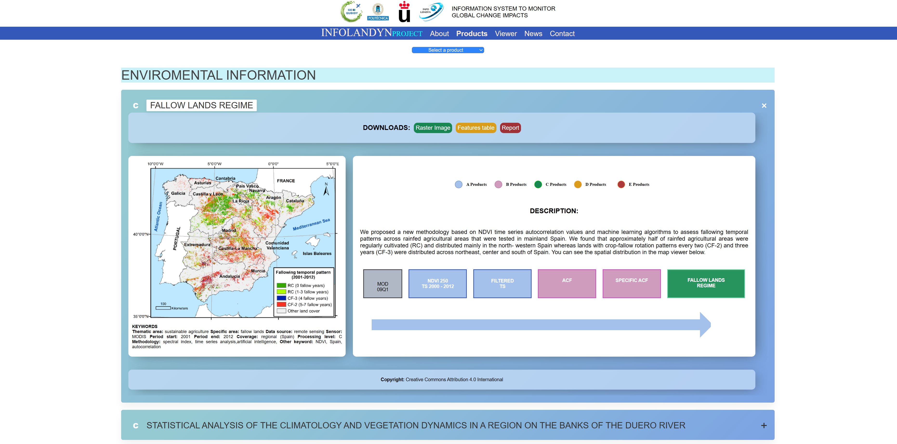
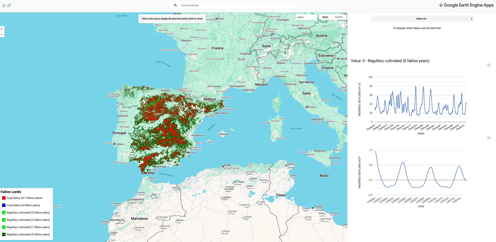

Infolandyn — Geospatial visualization
Web project for interactive geospatial visualization, implemented with Google Earth Engine so geospatial data can be viewed and processed in the browser.
Description
The site shows geospatial layers, display controls and tools to explore vector and raster data on Google Earth Engine maps. It is meant to share results and let users and collaborators explore them.
- Technologies: Google Earth Engine, JavaScript, HTML/CSS
- Interaction: layer selection, time controls and legends
- Purpose: demonstrate and publish geospatial visualizations
Gallery


